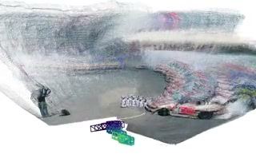
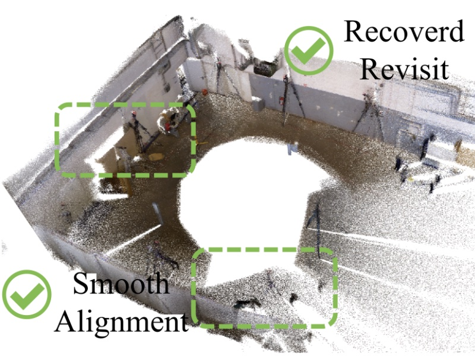
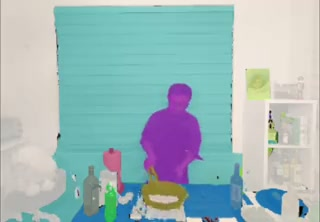
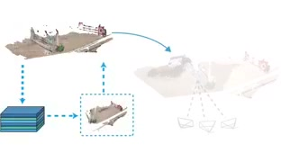
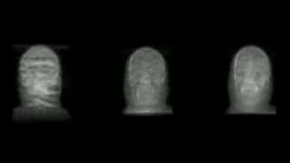
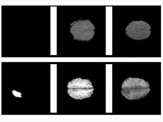
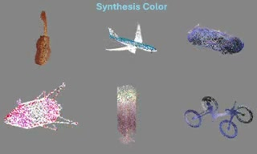
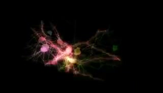

Feiran Wang
Hi, I'm Feiran, a third-year PhD student in computer vision at Illinois Tech, advised by Professor Yan Yan. I'm currently a Research Intern at the Bosch Center for Artificial Intelligence (BCAI), mentored by Dr. Xiaoqi Wang.
My research centers on Spatial Intelligence: powering agents to reason about real-world environments, predict spatiotemporal dynamics, and render future states of the world. My philosophy is that explicit 3D representation could be the foundation of a world model where agents and humans can interact with each other. My research spans 3D reconstruction, video generation, Vision-Language Models, Agentic Harness and Self-Evolving Agents.
I hold an M.S. from University of Illinois Urbana-Champaign, advised by Professor David Forsyth, and a B.S. from Shanghai University, advised by Professor Xiaoqiang Li. Previously, I had academic visits at the University of Michigan, and University of Illinois Chicago.

News
- 2026.05 One first-author paper, RayMap3R, is accepted to ECCV 2026 🎉
- 2026.05 Our lab was awarded Jetstream2 NAIRR computing resources.
- 2026.03 Thrilled to join Bosch Center for Artificial Intelligence (BCAI) as a Research Intern this summer!
- 2026.02 One paper, CIF, is accepted to CVPR 2026 🎉
- 2026.01 One first-author paper, CogniMap3D, is accepted to ICLR 2026 🎉
- 2026.01 Started my Visiting Scholar position at the University of Michigan, Ann Arbor.
- 2026.01 Our research on long-term memory reconstruction, CogniMap3D, is available on arXiv.
- 2025.09 One first-author paper, X-Field, is accepted to NeurIPS 2025 as Spotlight (top 3%) 🎉
- 2025.03 Our work on 3D medical image generation, ZECO, is accepted to MVA 2025 (Oral). 🎉
Work Experience

Long-tail dataset generation for autonomous driving. Focusing on 3D-based data synthesis and scene editing to improve perception model robustness in rare and safety-critical scenarios.
Publication

We revisit and observe that RayMap-based predictions exhibit inherent static scene bias and propose RayMap3R, a training-free streaming framework for dynamic scene reconstruction.

We present LIST3R, an instance-aware framework for long-sequence 3D reconstruction inspired by the way humans organize spatial memory around stable and recognizable objects.

CIF formulates a continuous probabilistic field over object existence and identity in space-time, enabling consistent instance representations across views for dynamic scene understanding.
GPF reformulates photon mapping as a continuous radiance field of 3D Gaussian primitives, achieving photon-level accuracy for global illumination with greatly reduced computation.

We present CogniMap3D, a bioinspired framework that maintains a persistent memory bank of static scenes, enabling efficient spatial knowledge storage and rapid retrieval.

Rooted in the X-ray imaging process, X-Field presents a representation specifically for high-quality X-ray Novel View Synthesis and CT Reconstruction.

To mitigate medical data scarcity, ZECO synthesizes high-quality 3D MRI images across various modalities, conditioned on segmentation masks.

Point clouds captured by LiDAR are often colorless; PCCN-RE enables high-quality colorization with a relevance embedding module built on a Conditional GAN.
Scientific Project

Understanding morphology and distribution of neurons remains a significant challenge in modern neuroscience. We aim to develop a unified framework for sparse-to-dense neural generation and unsupervised segmentation, providing deeper insights into neural activity and connectivity.
Article
An analysis of why 3D scenes may become the next major communication modality, examining the technological convergence and infrastructure developments that suggest we're approaching a transformative inflection point.
Research Mentorship
- Jing Gao · Beijing Jiaotong University, B.S. to Ph.D. · LIST3R (co-author) (Sep 2025 - present)
- Zezhou Shang · UPenn, M.S. to UMichigan, Research Associate · RayMap3R (co-author) (Sep 2025 - Apr 2026)
- Zhe Tao · UIUC, M.S., currently UIC, RA · 3D VLA Models (Feb 2026 - present)
- Vickie Chen · Rensselaer Polytechnic Institute, B.S. currently UIC, RA · Self-Evolving Agent (Feb 2026 - present)
- Rishi Madhavaram · UIC, M.S. to Dell · Medical Image Segmentation (Sep 2025 - Feb 2026)
Academic Activities
- Conference Reviewer: ECCV '26, CVPR '26, ICLR '26, ICMR '26 '25, ICCV '25, MVA '25
- Journal Reviewer: Computer Vision and Image Understanding (CVIU)
-
Scholarship: Cyrus Tang Scholarship
(Jan 2024 - Dec 2025)
Recognized for advancing medical imaging research and contributions to the healthcare community.